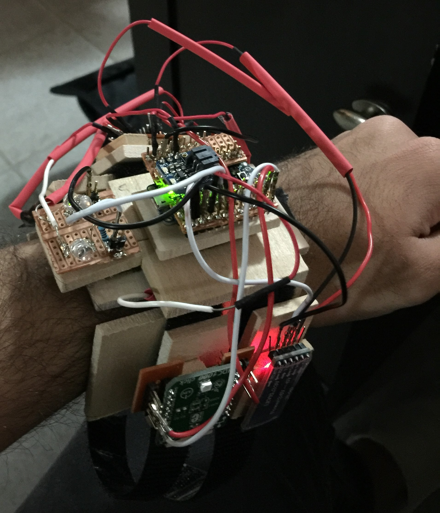

The Project
We call Smart Bracelet: Armisael, but this is a three piece project. This project is designed to use all the three pieces to compute one part of the system. Check the detailed information on each of the pieces listed below.
Smart Bracelet
This is the final prototype of the Smart Bracelet: Armisael. The Smart Bracelet is designed to compute the heart rate from the user, send the data to the mobile application, check if the heart rate is between the desired range, light up RED LED if the person is on anaerobic exercise or does not light up indicating that the person is on a normal state. The Bracelet's heart and mind is the Adafruit Pro Trinket 3V microcontroller. This microcontroller is just enough to process all the algorithm necessary. Pro Trinket runs on 12 MHz clock and is a good speed to process our code. Another advantage of the Pro Trinket 3V is that it operates at 3.3V and provides a current output up to 150 mA which is enough for powering the HDC1000, our humidity and temperature sensor. In comparison with regular Trinket or Pro Mini microcontroller, the Pro Trinket provides more pins and its Micro-USB power jack also made a difference for our goals. The Heart Rate sensor we used is called SON1240, made and distributed by China, and we chose it because of the accuracy and how it gets the pulse readings. The SON1240 uses diode light reflectivity technology, which means that it emits light on the surface of the skin and the light penetrates till the blood cells. At the blood cells level, this light will be reflected by the blood; when the heart does not pulse, the intensity of the reflected light is low, and when the heart pulse, the intesity of the reflected light is high. This sensor has two types of outputs: a square wave and a continuous oscillation wave. The square wave would be the best option, easier to measure and understand, but its main problem is that each reflection is not the same. Which leads to different periods of the square wave and sometimes the refelction is not intense enough to compute as a heart beat. Therefore, we chose to use the output in which gives us a continous wave form, this form computes much more accurate each intensity of each reflection. This way, our algorithm can provide a much more accurate measure of the user's heart rate. The Humidity and Temperature sensor we used is the HDC1000. We chose it because of the easy access to it, the simplicity in getting its data and the simplicity of attaching it to our schematic. The Bluetooth module is the CC2541 (also known as HM10). We selected this module because of three reasons: good finance outcome (not expensive), simple to configure and to use, and the most imporant it consumes very low power energy. This module is the new series of Bluetooth 4.0 which are also called BLE - Bluetooth Low Energy consumption. The last piece of the Bracelet is the battery. It uses a 3.7V lithium battery smaller than a quarter. The battery powers the Pro Trinket 3V, BLE and the Heart Rate sensor directly. If you take a close look into our design, you will find that there is a section that contains a board divided in two. This board is the extension of our battery. One side there is Vcc (voltage) and the other side is GND (ground). This structure allows us to use female headers to connect all the pins. Therefore is easy to modify any particular component of hardware of our bracelet.
Our bracelet is designed using straps and pieces of wood. The wood is mainly used as the band of the bracelet: making it comfortable to wear and also avoiding any electrical shocks to the user.
Exoskeleton
Paris is the capital of France.
Mobile Application
Tokyo is the capital of Japan.